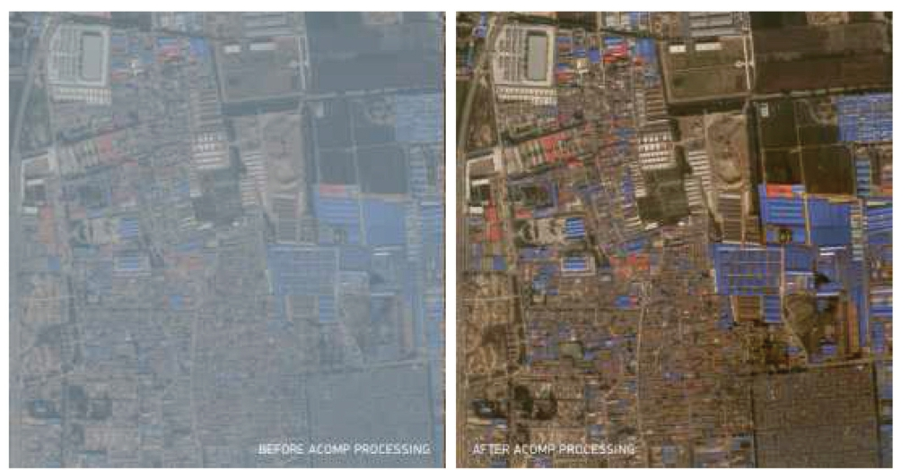
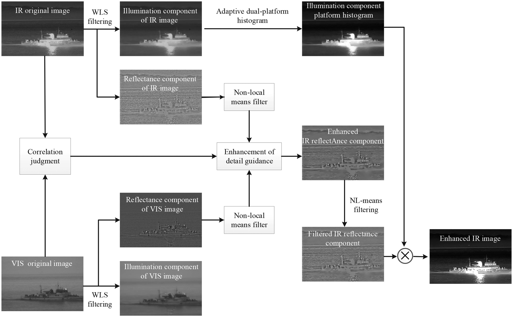

3 week3-Remote sensing data pre-processing
3.1 Summary
3.1.1 Image correction
The week began with a study of the different correction methods and their principles, which I will summarise in terms of their characteristics.
- Geometric correction and its Response Scenario: When collecting remote sensing data, there are image distortions due to viewing angle, terrain, wind, earth rotation, etc.
| Step | Name | Definition |
|---|---|---|
| 1 | Identify GCPs and transform coordinates | Identify ground control points (GCPs) in the image using data such as local maps. Derive geometric transformation coefficients in terms of the coordinates of the GCPs and use polynomial functions to map the distorted image coordinates to the correct geographic coordinates. |
| 2 | Regression analysis and optimisation of the fit | Techniques such as linear regression are used to correlate distorted x or y coordinates with undistorted coordinates from the GCP. The root mean square error (RMSE) is calculated to measure the accuracy of the correction. Adjustments are made to minimise the RMSE. |
| 3 | Resampling | after computing the transform coefficients, the image is resampled to match the corrected coordinates. Resampling methods include nearest neighbour, linear, cubic and cubic spline. |
| No. | limitations | Definition |
|---|---|---|
| 1 | Dependence on high-quality ground control points | If these points are not of high quality (e.g., inaccurate positioning), this may lead to inaccurate results in the calibration process. |
| 2 | Loss of data quality due to resampling | some data quality may be lost due to interpolation during the resampling process. For example, nearest neighbour interpolation may lead to pixelation effects, and linear and cubic interpolation may introduce data smoothing. |
| 3 | Affected by environmental conditions | In complex or rapidly changing terrain (e.g., mountains or canyons), it may be difficult to obtain accurate geometric corrections, even when using GCPs. If the environment is rapidly changing, the final image may not accurately reflect current conditions, even with geometric correction. |
| 4 | Higher cost | A large amount of manual input is required in selecting and validating GCPs. Being a computationally intensive process increases the overall resource and time requirements of the project. |
- Atmospheric correction and its application scenarios: Used to eliminate the effect of atmospheric gases and particles on light captured by remote sensing instruments, as the atmosphere can scatter and absorb light and thus change the true reflectance value of the Earth’s surface as seen by the sensor.
| Type | Benefit | limitation |
|---|---|---|
| Relative correction | 1. This can be done using the image data itself without additional atmospheric information. | 1. May not be able to fully correct for all atmospheric effects when conditions vary greatly between images. 2. Less suitable for quantitative analyses requiring precise reflectance values. |
| Absolute correction | 1. Provide more accurate corrections by using physical models of atmospheric properties | 1. Detailed atmospheric data, such as local atmospheric visibility, are required 2. Models must be carefully selected and calibrated to the specific conditions of the image. |
| Experience line correction | 1. Provide more targeted calibration for the time and conditions of image acquisition. 2. correctly collect in-situ measurements to ensure calibration accuracy. |
1. Demanding conditions: In situ measurements must be made simultaneously with the satellite overpass to ensure that atmospheric conditions are matched. The selected ground targets must be well distributed throughout the image and cover the range of reflectivity values present in the scene. |

- Orthometric and Radiometric correction
| Correction | Benefit | limitation |
|---|---|---|
| Orthorectification | 1. The spatial accuracy of the imagery is improved to measure true distances, angles and areas. 2. Can be seamlessly integrated into GIS, and deformed images become easier to interpret in tasks such as element extraction and land cover classification. |
1. High calibration requirements If the DEM or sensor geometry is inaccurate, errors are introduced rather than corrected. |
| Radiation correction | 1. In cases where the signal received by the sensor is affected by atmospheric conditions, angles, etc., radiometric correction reduces the impact on the quality of the data for comparison with different sensors at different times. | 1. The conditions are demanding; solar altitude angle affects the intensity of the radiation, and remotely sensed images are usually acquired at times when the solar altitude angle is relatively high and atmospheric conditions are stable. Properly performed radiometric corrections also require adequate sensor calibration information, such as gain and offset. |
3.1.2 Data joining and enhancement
- Data joining
The counterpart to GIS merging in remote sensing is called tessellation. Feathering using a base image and other images is used to reduce the effect of seam lines.
Feathering is different in different cases: usually based on representative samples and histogram matching algorithms it is possible to obtain similar luminance of two images for feathering
Comparison between multiple images on the same area or when processing images at different times
Use normalisation and normalisation of Surface Reflectance (SR)
Use Permanent Invariant Features (PIFs, Permanent Invariant Features) or other surface features that do not change over time to calibrate differences between multiple images.
- Data enhancement
In order to improve the visual appearance or outcome, images can have different enhancements applied to them：
Sensors have a low band range in most of the images to avoid saturation, so methods like Minimum - Maximum, Percentage Linear and Standard Deviation, Piecewise Linear Contrast Stretch are used to add contrast.
There are also different ways to improve the image such as Ratio, Filtering, Principal Component Analysis, spatial variation of grey values, Data Fusion.


3.2 Applications
Since remote sensing products are often already calibrated during the application phase, this time I focused on investigating the issue of image enhancement applications in the classroom.
- How image enhancement methods can help the urban environment?
The computations such as image connectivity and enhancement learnt this week can be useful in real-world studies of urban environments. For example, in applications where edge enhancement of remotely sensed images is used to extract building footprints for monitoring natural disasters and urban development. The U-Net CNN architecture is one of the most basic networks in semantic segmentation, but such networks are not deep enough to detect detailed edge features.
Hoin Jung et al.(Jung, Choi & Kang 2022) used the edge features obtained by overall nested edge detection as inputs to their boundary enhancement module, where the two subunits of the module, detection boundary and segmentation mask, share information by combining probability graphs to represent the likelihood of the target object for boundary enhancement purposes. Compared with other semantic segmentation methods, the extracted architectural results of the proposed method in this study can have clear and subtle boundaries. In addition to extracting building information, the use of edge enhancement can also be used to obtain features of other features, such as the representation and extraction of spectral features of water bodies (Zhang & Lun 2023), which can help monitor the urban water environment.
- Does increasing the complexity of the images (or creating new datasets) help us achieve our goals?
Contrast enhancement and filtering mainly improve or modify the visual quality or specific features of existing imagery, PCA and texture analysis may lead to the creation of new datasets and an increase in complexity.
For example, texture is defined by calculating a statistical measure of pixel values within a local area of the image, thus increasing the image dataset for texture measures. Dekker et al. (Dekker 2001)investigated the map updating capabilities of ERS SAR imagery in urban areas using texture measures and found mean intensity, variance, skewness, weighted rank fill rate, semi-variance function (or wavelet energy measure), and gap metrics several texture measures are capable of providing the best land cover separability for the Rotterdam area. Overall, enhancement techniques can increase the information content of the images in different ways, to some extent placing new demands on the analysis and interpretation of the data, but also accomplishing the appropriate goals for the research questions.
3.3 Reflection
Honestly speaking, due to the previous exposure to corrected remote sensing products, this is the first time to learn the principles of remote sensing correction systematically.
As a matter of fact, correction procedures such as atmospheric correction and terrain correction are crucial for obtaining true information about the ground surface, just like in climate change research, failure to correctly correct for cloud cover or atmospheric effects may lead to misinterpretation of surface temperature and vegetation status. I believe that accurate image correction also ensures that decision makers can make more effective judgements in areas such as environmental monitoring, urban planning, and agricultural management.
For example, in the field of public safety, corrected images can be used in disaster response and emergency relief (Li et al. 2016) for real-time disaster monitoring. I believe that in the future, we can continue to extend image correction skills to different remote sensing platforms, such as UAVs or near-Earth observation, and thus improve the real-time and accuracy of disaster monitoring, which is very much in demand.
As mentioned in the application case, enhancement techniques such as PCA or filtering can be used to extract specific environmental features, which is very important in applied research in geological exploration, biodiversity. I also believe that integrating datasets of different formats, resolutions, and times is very necessary in practical research, because our research often requires the integration of a collection of remote sensing data from multiple sources as well as long time series in order to make the research more meaningful. Therefore, I found the data preprocessing and quality control methods learned in this literature to be very beneficial. In future research, I believe that integration with datasets from other disciplines (e.g. socio-economics, ecology) is necessary, which is the key to applying remote sensing to a wider range of real-world problems, and I have learnt that methods of augmenting datasets are constantly being updated, and I hope that I will be able to learn more advanced algorithms and models to deal with more complex datasets in the future, such as the use of machine learning techniques to automatically identify and classify surface features.
3.4 References
Chen, J. et al., 2020. A Novel Infrared Image Enhancement Based on Correlation Measurement of Visible Image for Urban Traffic Surveillance Systems, Journal of Intelligent Transportation Systems. Taylor & Francis, årg. 24, nr. 3, s. 290–303.
Dekker, R.J., 2001. Texture analysis of urban areas in ERS SAR imagery for map updating [Online]. New York: IEEE.
Jung, H., Choi, H.-S. & Kang, M., 2022. Boundary Enhancement Semantic Segmentation for Building Extraction From Remote Sensed Image, IEEE Transactions on Geoscience and Remote Sensing, årg. 60, s. 1–12.
Lee, K.-H. & Yum, J.-M., 2019. A Review on Atmospheric Correction Technique Using Satellite Remote Sensing, Korean Journal of Remote Sensing. The Korean Society of Remote Sensing, årg. 35, nr. 6_1, s. 1011–1030.
Li, Y. et al., 2016. Geometric correction algorithm of UAV remote sensing image for the emergency disaster [Online].
Zhang, Y. & Lun, H., 2023. Remote Sensing and Image Processing Techniques for Water Environment Monitoring: A Case Study of the Beijing-Tianjin-Hebei Region, TRAITEMENT DU SIGNAL. Edmonton: Int Information & Engineering Technology Assoc, årg. 40, nr. 4, s. 1771–1779.